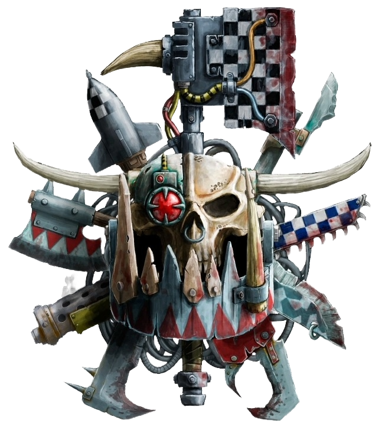

Meet Da Klans
The Freebooterz symbol
Da Klans
Despite their chaotic nature, Orks do organize themselves into warbands with a primitive hierarchy, where the biggest Ork is the leader. You see, Orks grow after a good fight, so the biggest Orks have been in the most fights. However, every Ork falls into 1 of 7 different “Klans” filled with like-minded Orks. In order, the Klans are:
The Goffs are the biggest and the meanest Orks. They love nothing more than to barrel through their enemies on foot in a rioting tide. This clan is known for producing a lot more “Nobz” and “warbosses” than other clans. All of their members wear the colors of toughness and fearlessness (black and white). They also have a deep disdain for anything they perceive as “mucking about.” A notable member of the Goff Klan is Ghazghkull Thraka, the prophet of the waaagh, and the most infamous warboss.
The Evil Suns are speed. They produce the most speed freaks and love to ride forth, engines raging and wheels burning. They all love to go fast to the point that they can become physically sick if they are unable to. The colors they wear are reds and oranges, as orks believe these colors are the fastest. When the Evil Suns are not in battle racing around, they can be found holding drag races through their tribes camp.
The Bad Moons are the flashiest orks. These orks have the fastest-growing teeth, making them the richest orks, as orks use teeth as currency. Their color of choice is Yellow, as a sign of their wealth; however, their armor is covered in golden relics they have liberated from other Xenos species. It's rumored that you can see a Bad Moon warband from orbit due to its flashiness. They love flaunting their wealth, wearing more jewelry than any other clan. They also use the most cutting-edge of ork technology and weaponry.
The Snake Bites are the complete opposite of the bad moons. They believe in “Da old wayz” and prefer to live a more primitive life. They hate anything they see as needlessly fiddly or newfangled. Wearing stained beast hides, these Orks are all about tradition. This tribe has a particular ritual where they allow different venomous snakes from across the galaxy to bite them to prove their toughness. However, they are also notorious for just leaving those invasive snakes when they are defeated.
The Blood Axes are a band of Orks shunned by others. They are shunned for their use of tactics and strategy, which the orks deem as improper. They are the sneakiest orks and often act as mercenaries for other Xenos. They do not fully understand how camouflage helps someone hide, just that it does, so they will paint their machines and selves these strange colored camo patterns that are not stealthy at all, only disappear from our eyes because they believe it helps them hide.
“Da Death Skullz iz a Bunch of theiving Gitz!” That's what any ork will tell you. They will steal anything from anyone that is or isn't nailed down. Only to turn around and sell the Ork whatever they just stole from them. They wear the color blue as they believe it is the luckiest. This is all about taking what you like, as they do not view others' possessions as theirs. Instead, they believe that if it was stolen fair and square, it's theirs. This rule applies to their property as well.
The Freebooterz are a clan that is not recognized as an official clan. It's more of a clan for those who are clanless. They are composed of rejects from the other clans. The only requirement to become a freebooter is not to fit in where you were born. As the name suggests, they are intergalactic pirates. Meaning they long for adventure and traverse the galaxy on massive ships, plundering wherever they go. Freebooterz are the Sneakiest and most self-interested bunch of orks out of them all.
